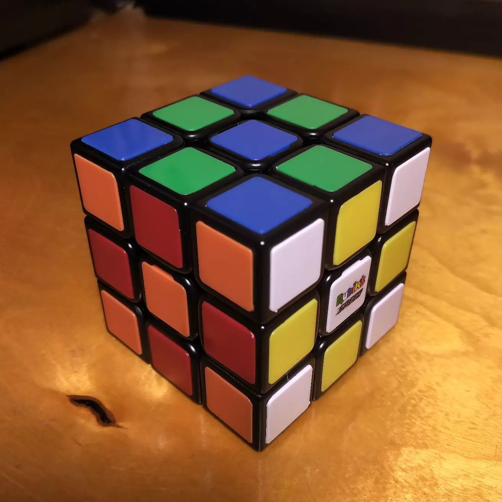
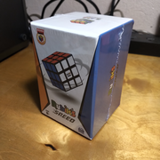
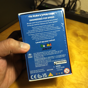
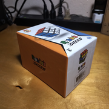
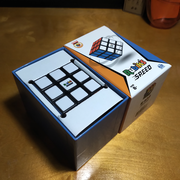
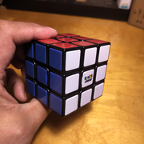
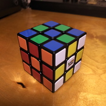
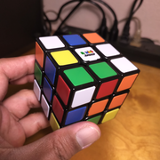
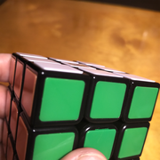
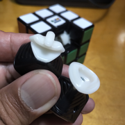

Rubik's Speed
{kind=link}

6063163 (2021)
Rubik's Speed 3 × 3. Finally!
As a #cubezoomer, I guessed that it was only a matter of time before Rubik's would come up with a speed cube design, either on their own or through collaboration.
The packaging is an analogue to the other cubes in this collection, and the lack of clamshell plastic in Western packaging is refreshing.
The turning is similarly loud and bumpy as an original Rubik's Cube, but much faster and less rigid. The corner-edge magnets help compensate for the reduced rigidity by holding the pieces into a cube when you are not actively turning it. The magnet strength is just right, given that they are not adjustable.
Adjustment of the axis distance is via a screw, which I was able to quickly do to tighten up the cube. (Is this the first Rubik's with screw adjustment?) It also features conical springs, which (allegedly) spread out the force of the spring to a greater area inside the center piece, supposedly making it more stable.
The mechanism inside features perpendicular torpedoes in the edges, and very wide corners which fight against pops.
I also appreciate the color shades of the plastic tiles, just like the stickers from the original. My only nitpick is that the fit and finish leaves a little to be desired. In particular, some of the tiles are not flush with the surface of the cube, and some have a (very slight) slope that had nothing to do with the shape of the cube. It doesn't throw me off during solves, however.
With a more modern mechanism, the Rubik's Speed Cube can fly through your solves, but can still be almost as durable as the tanks that were the originals.
Original post: https://www.instagram.com/p/CyBSzi5L3Zg
Specifications
| Make | Rubik's |
|---|---|
| Model | Speed |
| Edition/Variant | |
| Model no. | 6063163 |
| Release year | 2021 |
| Magnets (edge-corner) | 🧲 |
|---|---|
| Magnets (core) | ❌ |
| Magnets (maglev) | ❌ |
| Stickerless | ⭕ |
| Internals | Black plastic, primary corner and edge stalks |
|---|---|
| Externals | Rubik's color tiles |
| Adjustment | Philips screw - axis distance |
| Remarks | Superseded in model name by another cube with a split-piece stickerless design |
Photos
{kind=link}

Cube box
{kind=link}

Box bottom
{kind=link}

Cube box (alternate view)
{kind=link}

Unboxing experience
{kind=link}

Cube in hand (with white face)
{kind=link}

Cube (checkerboard state)
{kind=link}

Cube (scrambled state)
{kind=link}

Slight tile pitch variance
{kind=link}

Piece design (corner and edge)
Collections
This cube is part of the following collections: